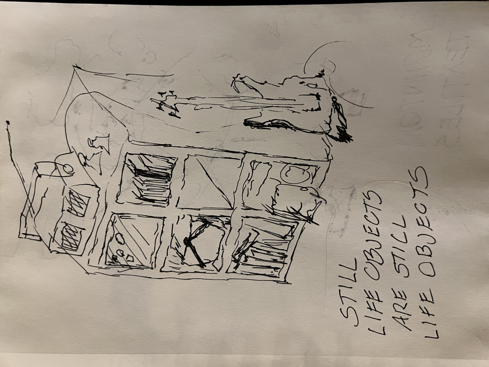
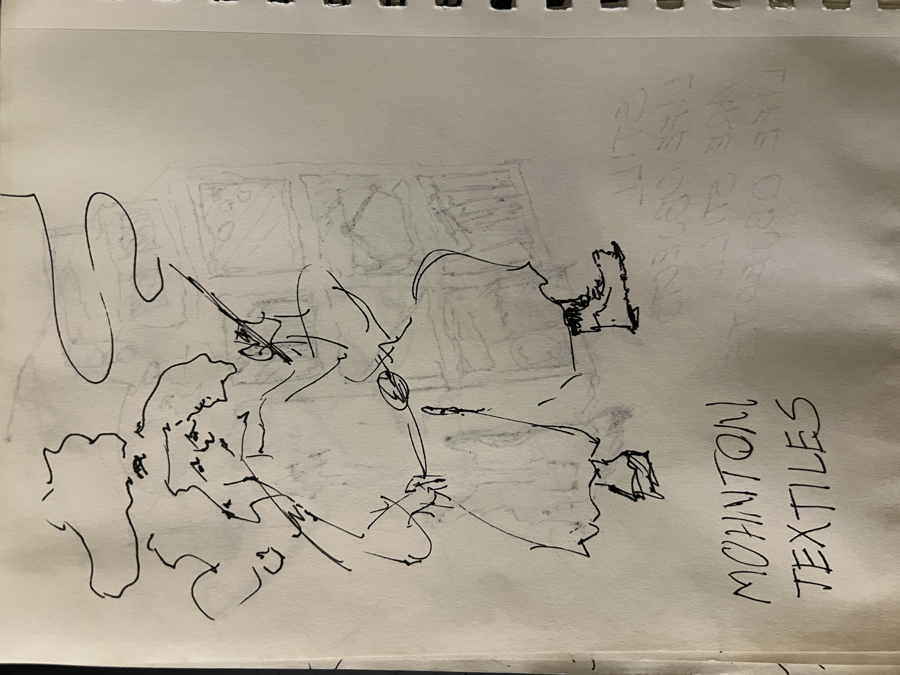
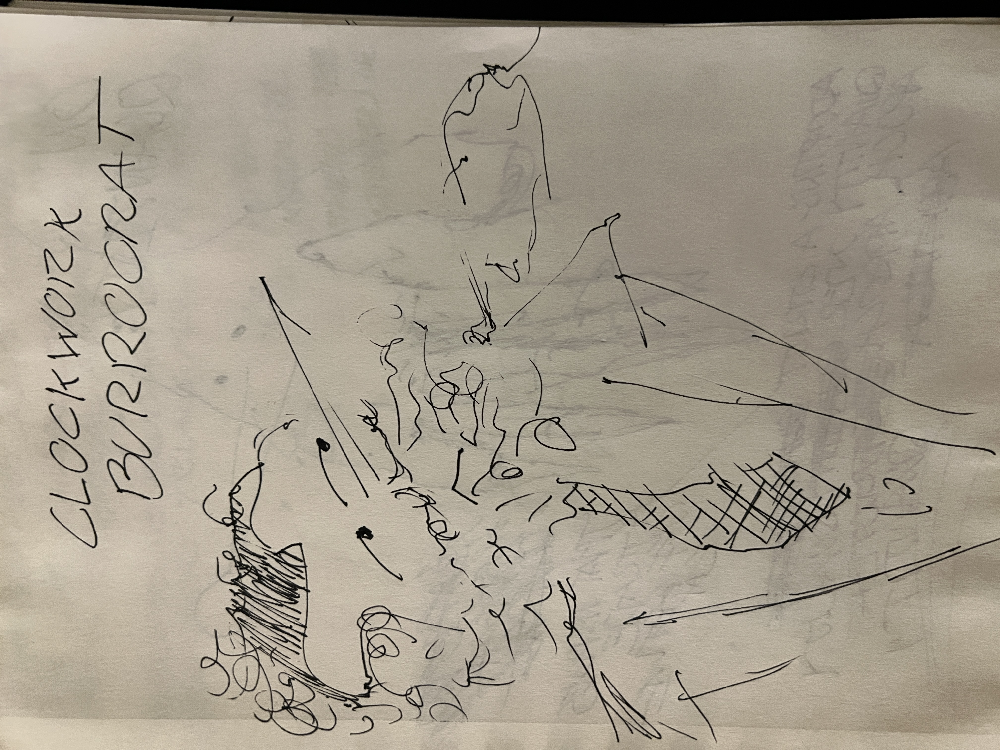
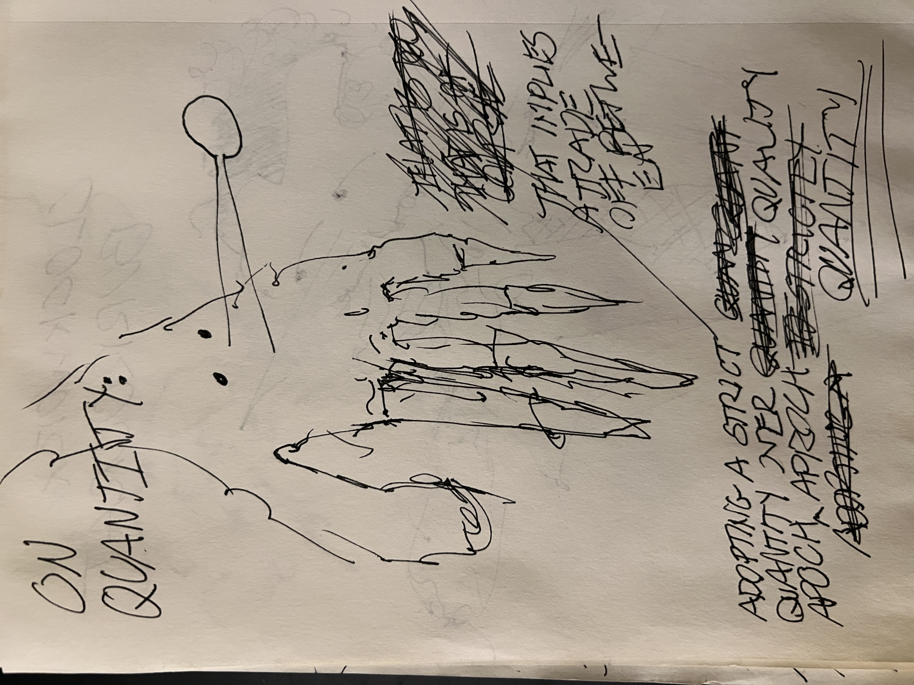
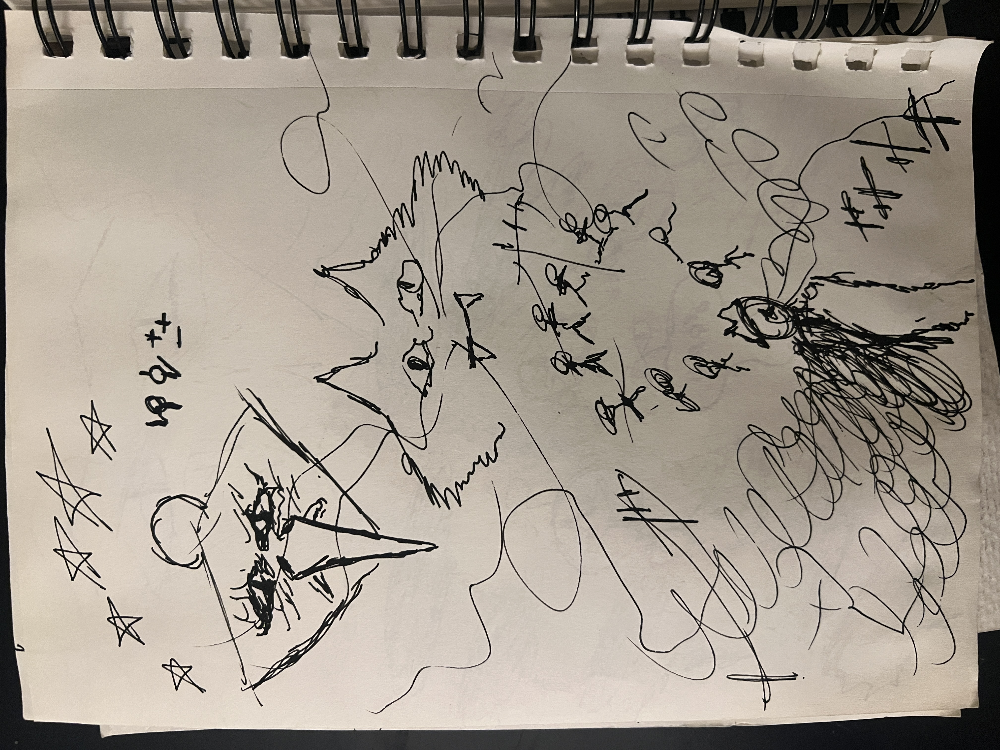
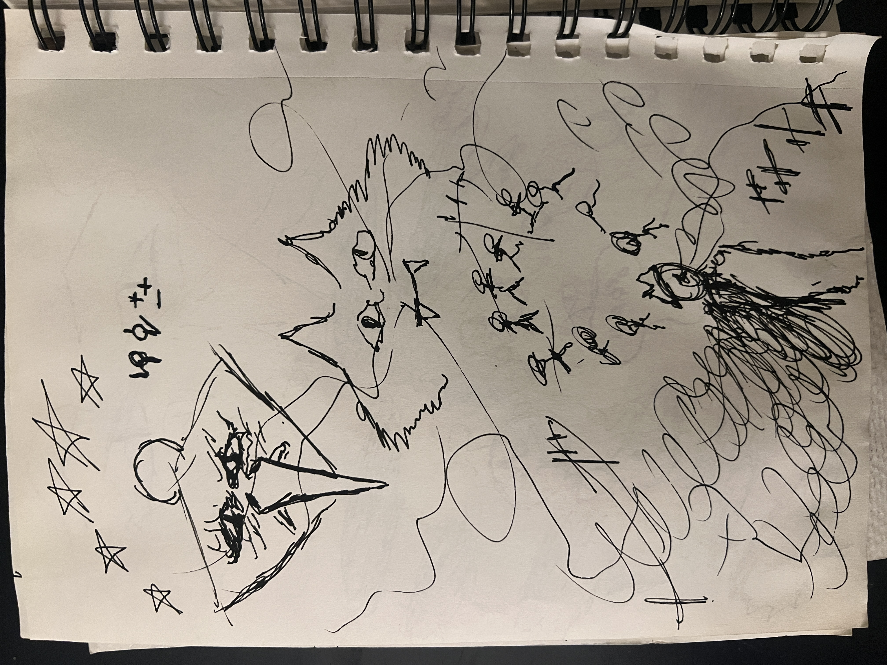

angelica creek slop mill

I've been "prompt engineering" my model to be a little more realistic. I like to leave my laptop in a hot car to punish it.
The goal of BIG TECH is the convergence of signs and police. Like those speed limit machines that say how fast you're going and flash red and blue to scare you.

I force fed stable diffusion a quantitative description of my life and published them here so I can hopefully "monetize my essence" without selling sperm. If the results spoke for themselves I wouldn't be talking:
   I was expecting the feelings people give to artistry to be inaccessible to regular people, kind of like a runners high.
(Those are actually bullshit)
I'm not above it like I'm on a catwalk about a factory line.
Know this about me: I can't use my phone because I'm so thoroughly drenched in sweat the touch screen won't read my fingers, and none of my clothes are dry enough to wipe it off.
"I don't want any advice or information"
There is nothing to talk about.
just because its a dry county doesn't mean we can't have a little fun
 
